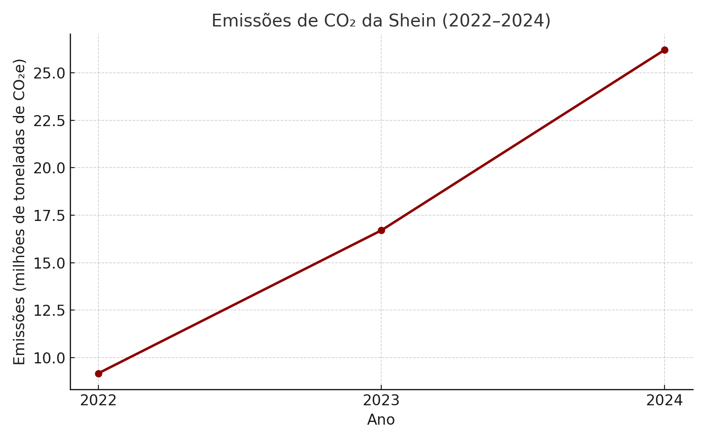

Shein com aumento e 13,7% nas emissões de transporte em 2024
A varejista de fast-fashion Shein apresentou um preocupante aumento nas emissões de CO₂, revelado em seu relatório de sustentabilidade de 2024.

A Shein, gigante global da ultra fast fashion, enfrenta críticas crescentes por seu impacto ambiental crescente. Segundo seu último relatório de sustentabilidade, as emissões de carbono associadas ao transporte aumentaram 13,7% em 2024, totalizando 8,52 milhões de toneladas de CO₂ equivalentes — frente a 7,49 milhões ton em 2023, após recalibração das métricas. Esse montante supera em mais de três vezes os 2,61 milhões de toneladas da Inditex, dona da Zara.
A dependência de transporte aéreo intensivo em carbono — enviando mercadorias diretamente da China para cliente internacional — é apontada como o principal fator das emissões elevadas. Em resposta, a empresa firmou metas ambiciosas: reduzir emissões de Escopo 3 em 25% até 2030 e alcançar neutralidade de carbono até 2050, conforme validação pela Science-Based Targets initiative (SBTi).
Entretanto, analistas e entidades ambientais levantam críticas severas. Reportagem da Vogue Business destaca que as emissões totais da Shein cresceram 176% desde 2021, saltando de 6,0 milhões para 16,7 milhões ton CO₂e em 2023, ultrapassando a Inditex e outras gigantes como LVMH e Kering. Os especialistas enfatizam que a estrutura de crescimento acelerado, inclusive via IPO, pode impulsionar ainda mais esse aumento.
Além disso, autoridades europeias, como a AGCM na Itália, investigam potencial “greenwashing” — apontando promessas vagas da marca sobre sustentabilidade, especialmente na linha “evoluShein”, cujas alegações teriam sido contraditas pelas próprias estatísticas de emissões da empresa

Para mitigar o impacto, a Shein ampliou o uso de frete marítimo e rodoviário, além de deslocar parte da produção para regiões mais próximas aos consumidores — ação que teria evitado cerca de 0,5 milhão de toneladas de CO₂ em 2024
O aumento expressivo nas emissões reforça o impacto climático do modelo de ultra-consumo da Shein — um alerta para a indústria da moda global, que responde por cerca de 8% das emissões de gases-estufa mundiais . Embora existam medidas positivas em curso, resta saber se serão suficientes para frear o crescimento desenfreado de sua pegada de carbono.